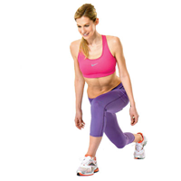

ေျခတံ သြယ္လ် လွပေအာင္

ညာေျခကို ေနာက္ပို႔ပါ။ ျပီးေနာက္ ဒူးႏွစ္ဘက္လံုးကို ေကြးလုိက္ပါ။
ကိုယ္ကို ေရွ႕ ၃၀ဒီဂရီေလာက္ ကိုင္းလိုက္ပါ။ ျပန္မတ္ပါ။
၁၀ - ၁၅ ၾကိမ္လုပ္ျပီးရင္ ဒူးျပန္ဆန္႔ ကိုယ္ကို လွည့္ပါ။
ညာေျခက ကိုယ္ေရွ႕ေရာက္ သြားရင္ ဒူးေကြးျပီး ေရွ႕ကို ၃၀ ဒီဂရီ ကိုင္းပါ။ ျပန္မတ္ပါ။
၁၀ - ၁၅ ၾကိမ္လုပ္ပါ။
ဘယ္တစ္လွည့္၊ ညာတစ္လွည့္ ၃ခါေလာက္လုပ္ပါ။